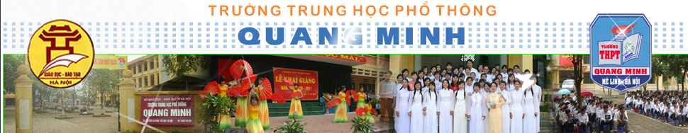

TIN TỨC & SỰ KIỆN
Sáng ngày 23/1/2022, tại nhà đã diễn ra Chung kết cuộc thi Khoa học kĩ thuật dành cho học sinh trung học. Tại cuộc thi, 3 học sinh đến từ đã đạt được thành tích xuất sắc với những đề tài nghiên cứu độc đáo, mang tính ứng dụng cao.
Danh sách học sinh đạt giải kì thi chọn học sinh giỏi thành phố Hà Nội năm học 2021-2022
Tết Nguyên Đán ngày càng cận kề với mỗi người dân Việt Nam. Trong ngày Tết cổ truyền này có những phong tục tập quán được lưu truyền từ xưa đến nay, đã dần trở thành một nét đẹp trong văn hóa lễ hội mùa xuân và lễ cúng ông Công, ông Táo là một trong số đó. Nhưng vẫn còn tồn tại trong đó vấn đề thải rác thải làm ô nhiễm nguồn nước tại những con sông, hồ, ao,.. vào ngày lễ thả cá ấy.
Một năm 2021 đã trôi qua với những điều mới mẻ, những khó khăn hay trải nghiệm đong đầy xúc cảm do dịch bệnh COVID-19 hoành hành. Dù vậy, trước khi đón Tết trong không khí đầm ấm, nhộn nhịp, chúng ta hãy cùng “ngoảnh lại” một năm đã qua cho dù đã thành công hay thất bại cũng là nguồn cảm hứng và động lực lớn cho năm 2022
Sáng ngày 23/1/2022, đã diễn ra Chung kết cuộc thi Khoa học kĩ thuật dành cho học sinh trung học. Tại cuộc thi, 3 học sinh đến từ đã đạt được thành tích xuất sắc với những đề tài nghiên cứu độc đáo, mang tính ứng dụng cao.
THƯ VIỆN ẢNH